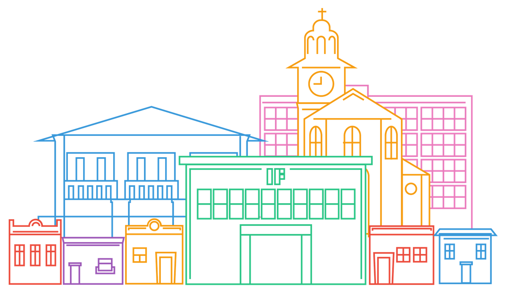

Conheça o IF.Tech, um evento criado por estudantes e professores do IFPB para falar de tecnologia.
O evento terá minicursos, palestras e competições.
Convidamos os amantes de tecnologia para conferir, de 26 a 30 de novembro, a primeira edição do
IF.Tech

Participe da 1ª edição do IF.tech, um evento de TI que acontecerá no IFPB
nos dias 26 a 30 de novembro. Nesta edição, a participação no evento é exclusiva para estudantes,
professores e servidores do Instituto Federal da Paraíba.
